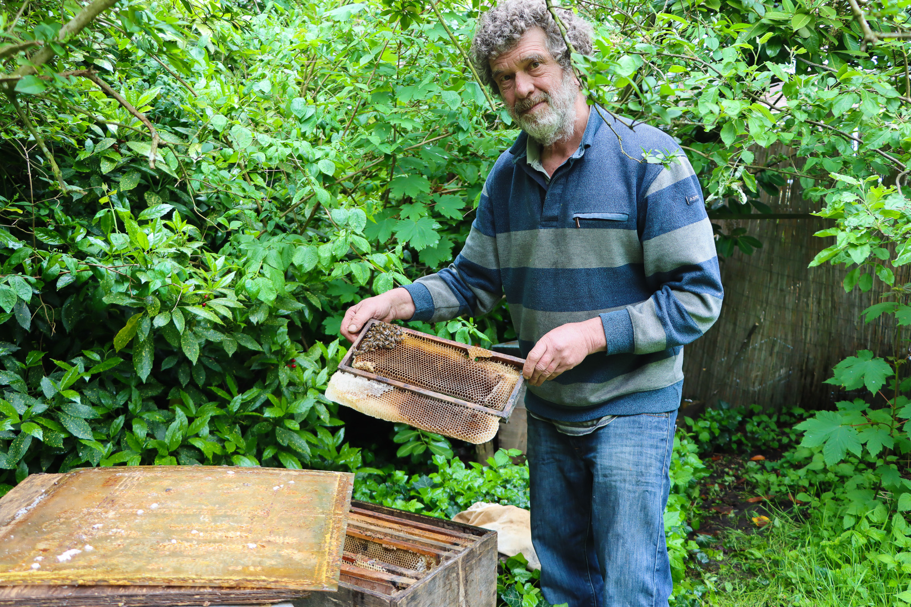
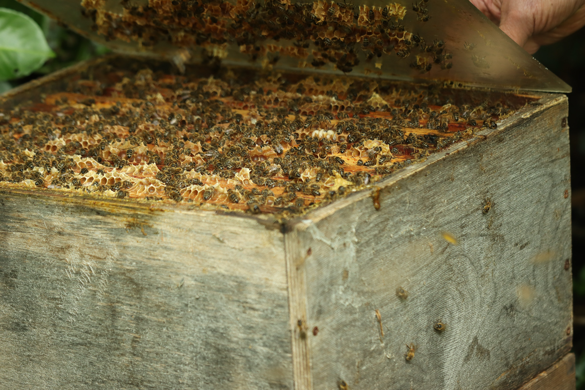
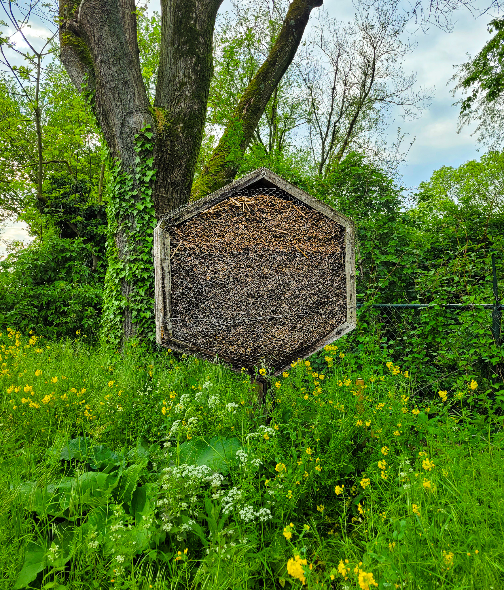

'Bij' bijenman Piet kun je terecht voor heerlijke honing
JamesIn Blijdorp, grenzend aan de Schieweg, woont Piet: een imker in hart en nieren. Hij staat bijna elke zaterdag op de oogstmarkt op het Noordplein waar hij honing en wasproducten zoals kaarsen verkoopt. Het aantal bijenvolken is in de laatste jaren echter flink afgenomen. Kan deze trend worden teruggedraaid?.
 Piet bij zijn bijenkastenIn een bosrijke gemeenschappelijke tuin achter de woning van Piet staan zijn bijenkasten. Zijn bijen leven verschuild tussen de imposante kastanjebomen. "Ik heb stekjes van deze bomen geplukt in Duivelsbergen bij Nijmegen. Dit zijn dezelfde soort bomen die 2000 jaar geleden door de Romeinen werden geplant", vertelt Piet trots. Piet houdt zijn tuin graag natuurlijk, vandaar de wilde uitstraling. Hij imkert al sinds de jaren negentig vol passie en hij heeft jarenlange ervaring opgedaan in een hommelkwekerij.
Een minimalistische aanpak
Terwijl ik foto’s maak vliegen de bijen onbekommerd om mij heen. "Zo lang je rustig blijft gebeurt er niets", zegt Piet. Hij werkt nooit in een imker pak. De bijen kennen Piet goed, waardoor hij zelden wordt gestoken. Hij gaat te werk in zijn normale kloffie en een hoed, zodat de bijen niet in zijn haren belanden. Piet imkert voorzichtig, want als je een bij plet ontstaat er onrust en loop je een grotere kans om gestoken te worden. “Werk je met rook?”, vraag ik terwijl ik mijn lens op een cluster bijen focus. “Zonder rook is het geen doen. Ik werk met een sigaretje; bij rook denken de bijen dat er brand is en zuigen ze zoveel mogelijk honing op voordat ze evacueren. Zo heb ik vrij spel om in de kast te werken.”
 Eén van de productiekastenOp 1 april is een bijenvolk het kleinst en op 30 april het grootst. “Na één maand is het werk gedaan, en gaan ze nieuwe koninginnen aanmaken”, legt Piet uit. Het verschil tussen een goed en slecht volk hangt af van de koningin. “Tijdens de bruidsvlucht vliegt ze uit om met een dar te paren. Als ze dan kruist met een fout mannetje krijg je een slecht volk in de bijenkast. Foute darren geven geen 'poetsgedrag genen' door, waardoor je bijenvolken krijgt die mijten óf door-mijten-aangetaste-bijenlarven niet wegpoetsen. In goede volken zijn er dus geen mijtenplagen.”
Natuurlijke predatoren
Piet heeft de bijenkasten gebouwd uit afvalhout. In de laatste jaren is zijn productiviteit als imker wel afgenomen. "Voorheen had ik altijd gemiddeld 20 productiekasten. Dat zijn er in de laatste jaren nog maar acht.", vertelt Piet op een stoïcijnse toon. “Dit ligt aan de grote bijensterfte als gevolg van giftige bestrijdingsmiddelen.” Ik vroeg Piet wat hij graag wil overbrengen aan de lezers. "We zijn te kortzichtig", antwoordt hij, "Het bestrijden van de ‘varroamijt’, een parasiet uit India, heeft grotere problemen veroorzaakt dan geanticipeerd." Imkers moeten stoppen met het behandelen van die mijt en als gevolg een paar enkele slechte jaren doormaken. "Omdat dit niet is gebeurd is de meerderheid van de bijenvolken omgekomen." De kennis van Piet op het gebied van insecten lijkt onuitputbaar. Hij doet onderzoek naar de inzet van predatoren in plaats van giftige middelen.
Een riant bijenhotel
Piet neemt mij mee langs een modderig pad richting zijn werkplaats. In deze hoek van de tuin staan een paar bescheiden bijenkasten. Piet verklaart: “Als een volk tijdens de zwermperiode groot genoeg is vertrekken meerdere zwermen met de oude koningin of enkele jonge koninginnen die om de troon gaan vechten. Iedere keer als een zwerm vertrekt blijft nog maar de helft over.” Hier maakt Piet ook kunstdraad. “Dat is een proces waarin ik was omsmelt in wasraten met behulp van regenwater. Zo maak ik kaarsen als bijproduct.”
Voordat Piet 400 kilogram honing gaat potten voor de oogstmarkt laat hij nog het bijenhotel zien dat hij heeft gebouwd aan de Gordelweg. Van dit hotel wordt menig bij hartstikke blij. Tot slot vraag ik aan Piet wat wij als consumenten kunnen doen? De boodschap van Piet moge duidelijk zijn: “koop zo veel mogelijk lokale honing.”